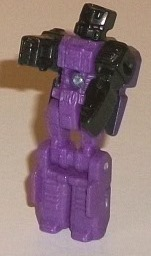
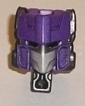
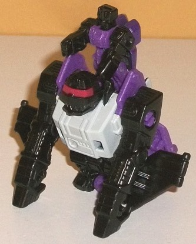
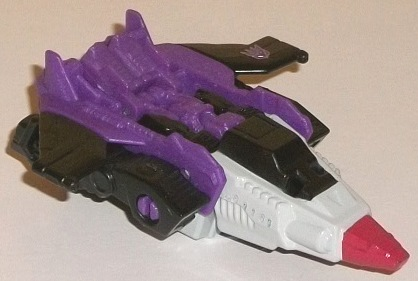
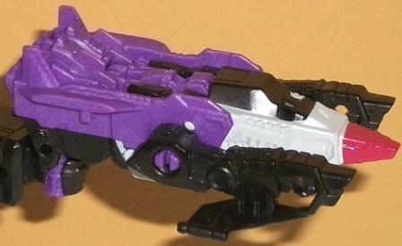

Allegiance
: Decepticon
Size:
Titan Master Set
Difficulty of Transformations
: Very
Easy
Color Scheme
: Black, light glossy
gray, chalky moderately dark purple, and some metaliic dark purple, silver,
and red
Rating
: 6.6
The Titan Master that
comes with this set has a robot mode that's basically G1 Apeface's robot
mode but with the proportions "squished" slightly into the standard Titan
Master proportions. He's got regular eyes but a faceplate, as well as a
short three-pronged "helmet" on his head. His legs are pretty generic in
their detailing beyond some rectangular bits on the lower legs, and same
with the arms except for blocks on the shoulders. The chest has the G1
Apeface rectangular panel in the middle, complete with four "bolt-like"
details in the corners of it, along with some small, fine details on the
waist and abs. All of these major details, again, are more-or-less copied
from G1 Apeface's robot mode. Unfortunately, it's not all that obvious
because Apeface has NO paint in this mode-- black on the arms and head
and purple on the rest. This is especially inaccurate for the main body,
which is white on the G1 toy. As for articulation, Apeface has the same
as any other Titan Master-- he can move at the neck, as well as back-and-forth
at the shoulders, hips, and knees (the latter two as one for both legs,
since the legs are molded together). In head mode, Apeface looks like...
well. Apeface's face. It's basically a much better-detailed version of
the Titan Master's head, with the aforementioned eyes, mouthplate, and
three-pronged helmet. Fortunately this time his details are painted, though,
with some silver on the angular faceplate and some dark metallic purple
paint on the helmet. He has black, soulless eyes, but honestly I think
it looks better than the silver eyes that were on the original Apeface's
head, so I don't mind.
The original Apeface--
in addition to being a Headmaster-- was a triplechanger, and became both
a jet and a mechanical ape, so that's what the two modes are for this set's
accessory. In ape mode, it again largely mimics the G1 toy in terms of
general detailing, a bulky body, and oddly skinny arms. The bottom half
of the ape mode is basically just detailing on a block of plastic (on the
bottom of the jet mode), though it is fairly intricate mold detailing that
even tries to mimic the circular ratchets on the G1 toy on the hips (though
the legs are undersized even for an ape). The face looks awesome, with
the G1 red visor painted against a rather angular ape head and carnivorous,
sharp triangular teeth. The back is mostly the jet mode with the jet cockpit
folded back-- there's two little nubs on the bottom of the back so that
you can have the Titan Master "ride" the ape mode, in a rather creative
little addition. The main colors of light gray, purple, and black look
fairly good, with the red on the visor forming a nice accent-- but unfortunately
the ape mode is really lacking paint detailing, especially with so much
intricate mold detailing all over the place. The arms, the stomach, the
legs-- all completely unpainted. Only the eyes and the glossy gray on the
chest are painted in this mode. For articulation, the arms can move back-and-forth
at the shoulders, though that's it. But then again, it's a Titan Master
set accessory, so for such a cheap price you can't be TOO picky here.
The set's jet mode is
made from basically flipping the cockpit over the ape head and laying the
toy on its stomach. As with the G1 toy, the cockpit is a bit large and
the wings small. The Titan Master integrates into the main body of the
jet by plugging in the head at the back end of the cockpit; the lack of
paint apps on the Titan Master's robot mode actually works in the toy's
favor in this mode, making it blend in quite well color-wise. The fat cockpit
with a fairly small nosecone helps make this jet mode more unique, but
this is definitely the weaker of the two main modes of the accessory, as
the main body is far too chunky and large proportionally, and the wings
are laughably small-- even moreso than on the G1 toy. The mold detailing
on the back end is a nice surprise, though, as the end of the ape arms
has thrusters molded into it, as do the feet of the ape mode. The paint
in this mode is solely focused on the nosecone, with some light gray around
the cockpit and some red on the tip. Otherwise this mode's all black and
purple.
As is unfortunately
the case with most Titan Master set weapon modes, Apeface's is reeeallly
weak-- from the jet mode, you just flip down the handle on the back and
then rotate forward the ape arms on the side, to make the thrusters molded
on them look like dual blasters. That's it. So this is a very weak mode,
basically just looking like a jet with arms. Honestly it's best forgotten
about.
Titans Return Apeface
unfortunately isn't a full-on update of the character, but having a Titan
Master who represents his robot mode and head, and a set that represents
his ape and jet modes, is admittedly pretty creative. The Titan Master
is decent (though desperately needing paint in robot mode), but the ape
mode is definitely the highlight of the set, looking solid all around with
some great mold detailing and the only weakness being (again) a lack of
paint. The jet mode is... eh, the weapon mode is even "eh"er. Still, overall
I think he's slightly above-average for a Titan Master set simply because
of how awesome the ape mode is and the general creativity of it.
No Stats
Review by Beastbot